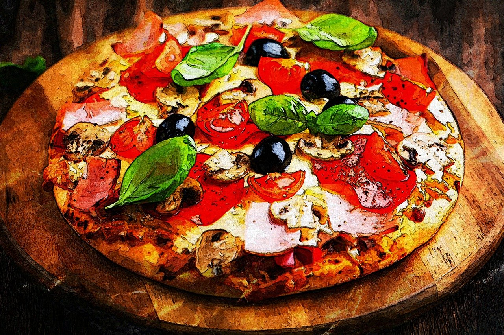
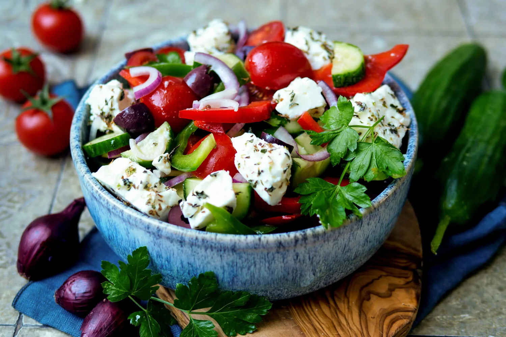
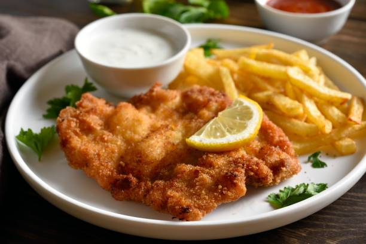
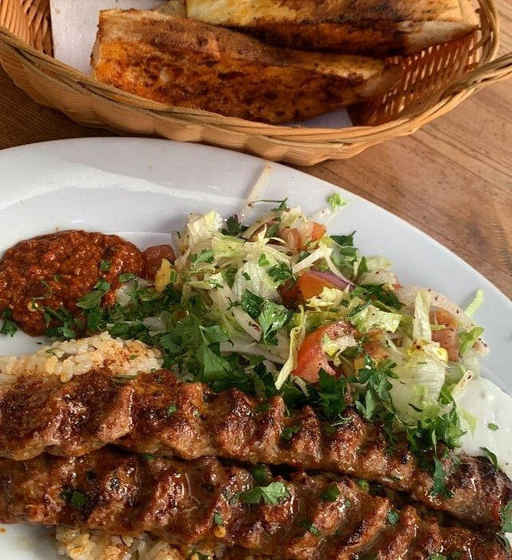
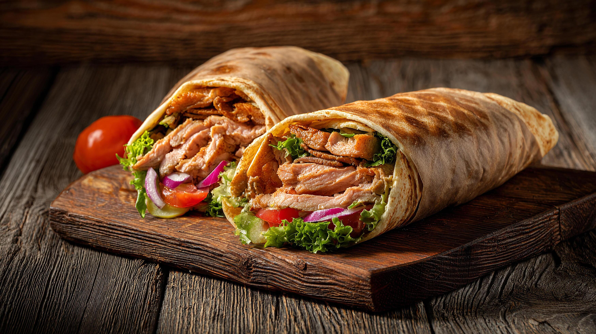
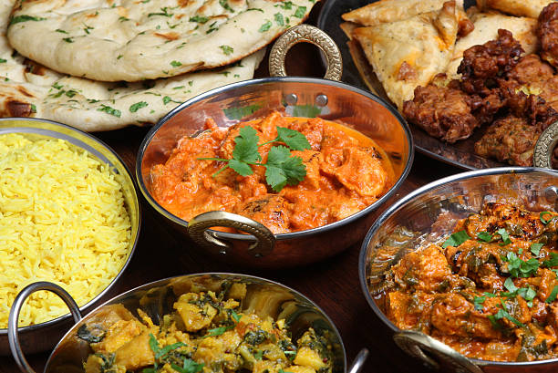
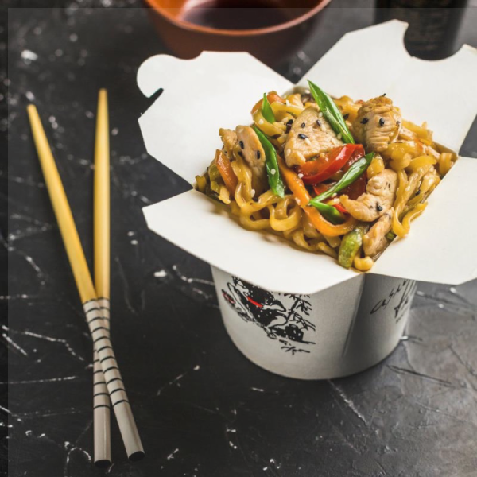
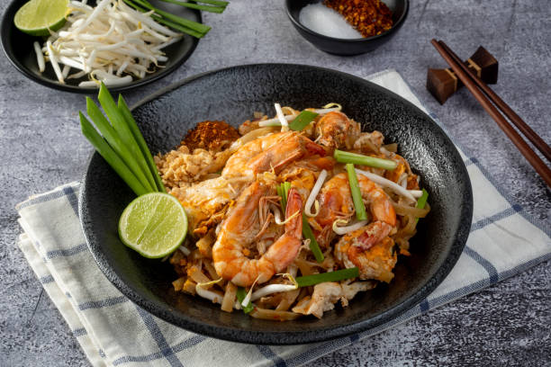
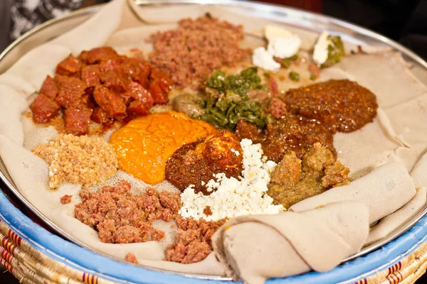
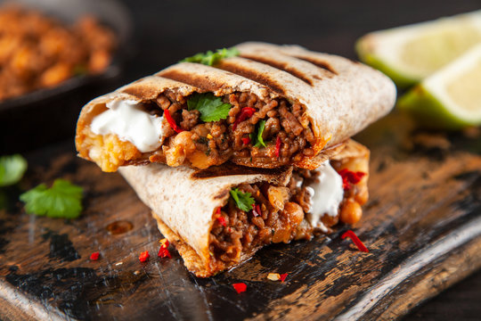

Foodspots Köln
Mediterane Küche
Die mediterrane Küche steht für Frische, Vielfalt und Genuss. Sie verient die Aromen sonnengereifter Zutaten wie Olivenöl, frischem Gemüse, Kräutern, Fisch und Meeresfrüchten. Typisch sind einfache, aber geschmacksvolle Gerichte, die nicht nur lecker, sondern auch gesund sind. Ob italienische Pasta, grischicher Salat oder spanische Tapas - die mmediterrane Küche bringt Urlaubsfeeling direkt auf den teller und lädt zum gemeinsamen Genießen ein.
| Pizza Romano | |
|---|---|
 |
Pizza Romano bietet ein vielfältiges angebot von Autentischer italienischer Pizza an. Die Pizzen werden Traditionell im Steinofen zubereitet. Außerdem gibt es eine große Auswahl an Desserts sowie heiß und kalt Getränken. |
| Neustadt Süd Barbarossaplatz 4, 50674 Köln Italienische Küche 20-30€ pro Person |
|
| Jamas | |
|---|---|
 |
Jamas ist ein Authentisches griechisches Restaurant, welches ein großes Angebot, welches von vorspeisen wie griechischem Salat über Hauptspeisen bis hin zu Desserts reicht. es liegt im Herzen von Nippes und ist gut mit dem ÖPNV erreichbar. |
| Nippes Sechzigstraße 1, 50733 Köln Griechische Küche 15-25€ pro Person |
|
Mitteleuropäische Küche
Die mitteleuropäische Küche überzeugt mit herzhaften Gerichten und kräftigen Aromen. Klassische Speisen wie Schweinshaxe, Wiener Schnitzel und deftige Eintöpfe stehen ebenso auf dem Speiseplan. Beilagen wie Knödel, Sauerkraut und Kartoffelsalat sind auch sehr beliebt. Mit ihrer reichen Tradition und der Verwendung regionaler Zutaten bietet sie eine köstliche Mischung aus rustikalem Charme und kulinarischer Raffinesse – perfekt für alle, die bodenständige, aber zugleich vielfältige Küche lieben.
| Bei Oma Kleinmann | |
|---|---|
 |
Bei Oma Kleinmann ist ein Restaurant im Herzen von Köln, das traditionelle Gerichte wie Schnitzel, Himmel un Ääd und die berühmten Halve Hahn serviert. Mit seiner gemütlichen Atmosphäre und zentralen Lage ist es perfekt für einen rustikalen Genuss und gut erreichbar mit dem ÖPNV. |
| Neustadt Süd Zülpicher str. 9, 50674 Köln Deutsche Küche 20-30€ pro Person |
|
Orientalische Küche
Die orientalische Küche begeistert mit intensiven Aromen und großer Vielfalt. Von Hummus und Kebabs bis Baklava sorgen frische Zutaten und Gewürze wie Kreuzkümmel oder Kardamom für unverwechselbaren Geschmack – ein echtes Erlebnis für alle Sinne.
| Kebap Land | |
|---|---|
 |
Kebapland in Köln-Ehrenfeld ist längst Kult in der lokalen Food-Szene. Bekannt für saftige Adana-Spieße vom Holzkohlegrill und frisch gebackenes Fladenbrot, steht der Imbiss für authentische türkische Grillkunst und intensiven Geschmack. Wer hier isst, erlebt Streetfood auf einem ganz neuen Level. |
| Ehrenfeld Venloer str. 385, 50825 Köln Türkische Küche 10-20€ pro Person |
|
| Marhaba | |
|---|---|
 |
Marhaba in Köln-Nippes ist ein beliebter Spot für frische orientalische Spezialitäten. Ob Falafel, Shawarma oder Halloumi – hier wird alles mit viel Liebe und frischen Zutaten zubereitet und überzeugt mit authentischem Geschmack und fairen Preisen. Perfekt für schnelles, aber richtig gutes Streetfood. |
| Nippes Neusser str. 278, 50733 Köln Libanesische Küche 1-10€ pro Person |
|
Süd-Ost-Asiatische Küche
Die südostasiatische Küche begeistert mit frischen Zutaten, intensiven Aromen und einem perfekten Spiel aus süß, sauer, salzig und scharf. Von Thai-Currys über vietnamesische Pho bis hin zu indonesischem Nasi Goreng – hier trifft Vielfalt auf Leichtigkeit und unverwechselbaren Geschmack.
| Chennai Chef | |
|---|---|
 |
Chennai Chef in Köln-Nippes bringt authentische südindische Küche auf den Teller. Mit Spezialitäten wie knusprigen Dosas, Idli oder würzigen Currys überzeugt der kleine Spot durch frische Zutaten, traditionelle Rezepte und echten Streetfood-Charakter. Ein echter Geheimtipp für alle, die indisches Essen neu entdecken wollen. |
| Nippes Amsterdamer str. 127, 50735 Köln Indische Küche 10-20€ pro Person |
|
| Chi.Noo’s | |
|---|---|
 |
Chi.Noo’s am Chlodwigplatz ist ein beliebter Spot für unkompliziertes asiatisches Streetfood. Mit gebratenen Nudeln, Reisgerichten und knusprigem Fried Chicken überzeugt der Laden durch schnelle Küche, starke Aromen und ein entspanntes To-go-Feeling – perfekt für den schnellen, leckeren Snack in der Südstadt. |
| Südstadt Chlodwigplatz 7, 50678 Köln Chinesische Küche 1-10€ pro Person |
|
| Hà Nội 46 | |
|---|---|
 |
Hà Nội 46 in Köln-Nippes ist ein beliebter Spot für authentische vietnamesische Küche. Ob aromatische Pho, frische Sommerrollen oder würzige Wok-Gerichte – hier treffen leichte Zutaten auf intensive Aromen und sorgen für echten Geschmack aus Vietnam. Perfekt für eine frische und schnelle Auszeit vom Alltag. |
| Nippes Kepmender Str. 46, 50733 Köln vietnamesische Küche 15-25€ pro Person |
|
| Tang Wang | |
|---|---|
| Tang Wang in Köln ist ein beliebter Spot für authentische chinesische Küche mit traditionellen und modernen Einflüssen. Von klassischen Nudel- und Reisgerichten bis hin zu besonderen Spezialitäten überzeugt der Laden mit intensiven Aromen und ehrlichem Geschmack – ein echtes Highlight für alle, die chinesisches Essen original erleben wollen. | |
| Altstadt Nord Maximinenstraße 4, 50668 Köln Chinesische Küche 20-30€ pro Person |
|
| Thai Imbiss | |
|---|---|
 |
Thai Imbiss am Eigelstein ist ein beliebter thailändischer Streetfood‑Spot. Hier bekommst du klassische Thai‑Gerichte wie Currys, gebratene Reis‑ und Nudelgerichte sowie aromatische Suppen schnell und frisch zubereitet – perfekt für einen unkomplizierten Lunch. Der Imbiss überzeugt durch gute Portionen, intensive Aromen und faire Preise. |
| Altstadt Nord Eigelstein 114, 50668 Köln Thailändische Küche 10-20€ pro Person |
|
Afrikanische Küche
Die afrikanische Küche besticht durch Vielfalt, Farben und kräftige Aromen. Von würzigen Eintöpfen über gegrilltes Fleisch bis hin zu exotischen Früchten und Hülsenfrüchten – jedes Gericht erzählt eine Geschichte der Region. Mit traditionellen Gewürzen, frischen Zutaten und herzhaften Kombinationen lädt sie zum Entdecken neuer Geschmackserlebnisse ein.
| Soliana | |
|---|---|
 |
Soliana – Fusion Home Cooking ist ein gemütlicher Spot in Köln-Ehrenfeld für äthiopische Küche mit modernem Twist. Hier bekommst du Injera mit würzigen Eintöpfen, vegane Platten und beliebte „Tibs“ (angebratenes Fleisch mit Gewürzen). Perfekt zum Teilen und Entdecken neuer Aromen – dazu freundlicher Service und entspannte Atmosphäre. |
| Ehrenfeld Subbelrather Str. 242, 50825 Köln Äthipoische Küche 10-20€ pro Person |
|
Südamerikanische Küche
Die südamerikanische Küche überzeugt mit Vielfalt, Farbe und kräftigen Aromen. Von saftigen Empanadas über würziges Ceviche bis zu herzhaftem Feijoada – hier treffen frische Zutaten, aromatische Kräuter und pikante Gewürze auf traditionelle Kochkunst. Jedes Gericht erzählt eine Geschichte seiner Region und lädt dazu ein, neue Geschmackserlebnisse zu entdecken.
| Rich`N Greens | |
|---|---|
 |
Rich`N Greens ist ein angesagter Healthy‑Food‑Spot im Herzen von Köln. Hier bekommst du vielfältige Burritos, Bowls, Wraps und knackige Salate, alles zubereitet mit hochwertigen Zutaten und intensiven Aromen. Die Kombination aus gesundem Essen und kräftigem Geschmack macht den Laden ideal für einen leichten Mittagstisch. |
| Neumarkt-Viertel Auf dem Berlich 9, 50667 Köln Mexikanische Küche 10-20€ pro Person |
|
Noramerikanische Küche
Die nordamerikanische Küche rund um Burger, Fries & Co. steht für herzhaften Genuss pur. Saftige Burger, knusprige Pommes und würzige Dips sind Klassiker, die mit intensiven Aromen, frischen Zutaten und kreativen Variationen begeistern. Perfekt für alle, die unkompliziertes, leckeres Comfort Food lieben.
| Freddy Schilling | |
|---|---|
| Freddy Schilling in Köln ist ein Hotspot für Burger‑Fans. Frisches Neuland‑Rindfleisch, handgeschnittene Pommes und hausgemachte Soßen sorgen für echten Comfort‑Food‑Genuss. Auch vegetarische und vegane Varianten stehen auf der Karte. | |
| Altstadt‑Nord Eigelstein 147, 50668 Köln Amerikanische Küche 15-25€ pro Person |
|
| 3h´s Burger & Chicken | |
|---|---|
 |
3h’s Burger & Chicken in Köln bietet saftige Halal‑Burger, knuspriges Chicken und Pommes in lockerer Atmosphäre. Frische Zutaten und intensive Aromen machen jedes Gericht zum echten Comfort‑Food‑Erlebnis. |
| Südstadt Koblenzer Str. 1-9, 50968 Köln Amerikanische Küche 15-25€ pro Person |
|